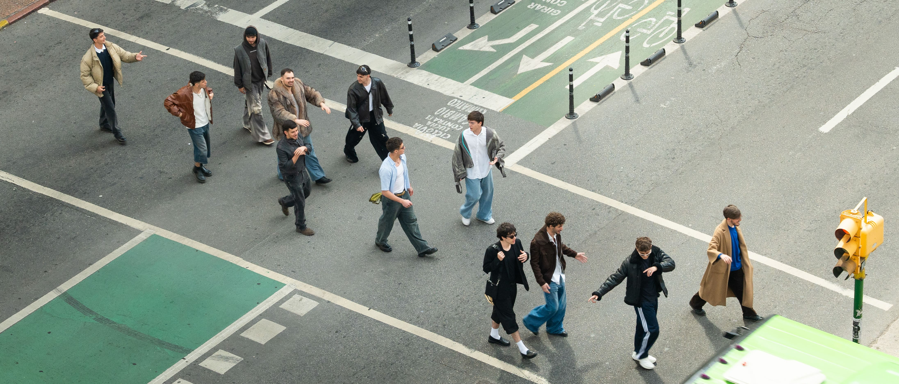

QUE ES NMD?
Nomades nace el 22 de octubre de 2022 por un grupo de amigos que compartían, no sólo una profunda
amistad, sino también una pasión común por la música. Inicialmente formada por diez integrantes, la
agrupación se expandió posteriormente con la incorporación de dos nuevos miembros, alcanzando su
composición actual de doce artistas.
Lo que comenzó como simples juntas entre amigos, momentos de ocio y convivencia, pronto se transformó en
un proyecto más ambicioso: la creación de una plataforma para expresar sus experiencias y emociones a
través de la música. Cada integrante aporta una visión personal al grupo, haciendo de Nomades un destino
donde convergen cada uno de sus caminos.
Aunque la música es el núcleo del proyecto, la visión de Nomades va más allá. Su objetivo es integrar la mayor
cantidad de ramas del arte en cada uno de sus proyectos, permitiendo que la expresión artística no se limite a
un solo medio. Esta apertura también fomenta la colaboración con otros artistas y creativos, creando así un
espacio inclusivo para enriquecer su propuesta y llevar su mensaje más allá de los límites musicales.
QUE ES JUNTA?
Junta es un proyecto musical impulsado por la naturaleza y las vivencias de Nomades como colectivo, que
resalta la importancia de compartir momentos y su impacto en el desarrollo personal. El disco expone la
diversidad de emociones y experiencias que surgen al conectar con otros.
A través de una fusión de estilos y sonidos, JUNTA refleja la esencia de la convivencia, la colaboración y el
crecimiento. Cada canción narra una historia que resuena en el corazón de quienes escuchan. Desde ritmos
alegres que invitan a la celebración hasta melodías introspectivas que fomentan la reflexión, el álbum crea un
espacio donde la música se convierte en un puente entre las personas.
Además, JUNTA busca trascender lo musical, integrando elementos visuales y narrativos que complementan
la experiencia auditiva. Cada tema se acompaña de arte que refleja su mensaje, convirtiendo el disco en una
obra multidimensional. Este enfoque permite que los oyentes se sumerjan completamente en el universo de
JUNTA, sintiendo la conexión no solo con la música, sino también con la naturaleza y las historias
compartidas.
.